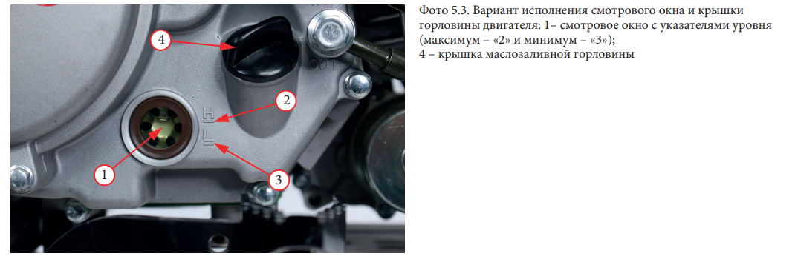
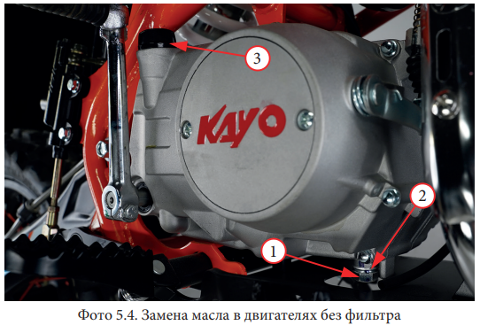

Проверка уровня и долив масла в двигателях без масляного фильтра
Открыть Фото
- Запустите двигатель и дайте ему поработать три минуты на холостых оборотах, затем остановите его.
- После остановки двигателя выждите три минуты, чтобы дать возможность маслу стечь.
- Установите питбайк вертикально на ровной горизонтальной поверхности.
- Выкрутите щуп (крышку маслозаливной горловины)1 и протрите его.
- Вставьте щупна место, НЕ ЗАКРУЧИВАЯ ЕГО.
- Вытащите щупи оцените уровень масла.
- Уровень масла должен находиться между метками верхнего 2 и нижнего уровня 3 на щупе
- Если уровень масла достигает или находится рядом с меткой максимального уровня 2, доливать масло не требуется.
- Если уровень масла находится на метке минимального уровня 3 или ниже ее, необходимо долить рекомендованное масло до
метки максимального уровня 2. Масло доливайте малыми порциями, периодически контролируя уровень по меткам на щупе. Старайтесь не переливать
- Установите щуп1 на место и убедитесь в отсутствии утечек.
Проверка уровня и долив масла в двигателях с масленым фильтром и смотровым окном
Открыть Фото
- Запустите двигатель и дайте ему поработать три минуты на холостых оборотах, затем остановите его.
- После остановки двигателя выждите три минуты, чтобы дать возможность маслу стечь.
- Установите питбайк вертикально на ровной горизонтальной поверхности
- Уровень масла должен находиться метками «H» верхнего 2 и нижнего «L» уровня 3 в смотровом окне1, расположенном на правой крышке двигателя.
- Если уровень масла достигает или находится рядом с меткой максимального уровня 2, доливать масло не требуется
- Если уровень масла находится на отметке минимального уровня 3 или ниже ее, необходимо долить рекомендованное масло до метки максимального уровня 2.
- Выкрутите крышку маслозаливной горловины4.
- Долейте рекомендуемое масло до верхней отметки 2. Масло доливайте малыми порциями, периодически контролируя уровень
в смотровом окне. Старайтесь не переливать.
- Установите крышку маслозаливной горловины4 на место и убедитесь в отсутствии утечек.
Замена моторного масла в двигателях без масляного фильтра
Открыть Фото
- Запустите двигатель и дайте ему поработать пять минут на холостых оборотах, затем остановите его
- Установите питбайк на ровную горизонтальную поверхность.
- Установите емкость для сбора отработанного масла под двигателем.
- Выкрутите крышку маслозаливной горловины3
- Для полного слива масла, выкрутите сливной болт, расположенный на нижней стороне двигателя 1, вместе сшайбой2. Слейте моторное масло полностью.
- Слейте моторное масло полностью
- Снимите свечной колпачок со свечи и несколько раз прокрутите двигатель рычагом кик-стартера. Это позволит слить из двигателя остатки моторного масла.
- Установите сливной болт1, вместе с новойшайбой2 и затяните с моментом 15 Н•м.
- В маслозаливную горловину, залейте рекомендованное масло до верхнего уровня как указана выше.
- Проверьте уровень масла, следуя инструкциям, приведенным выше. Проверьте, нет ли утечек масла.